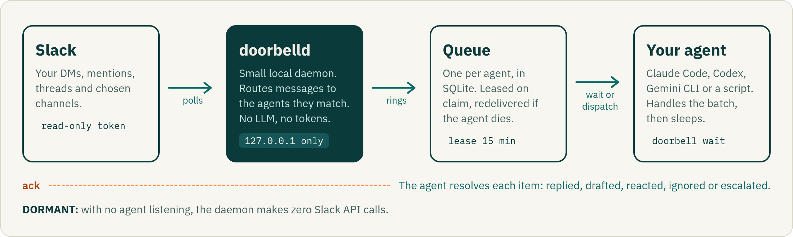
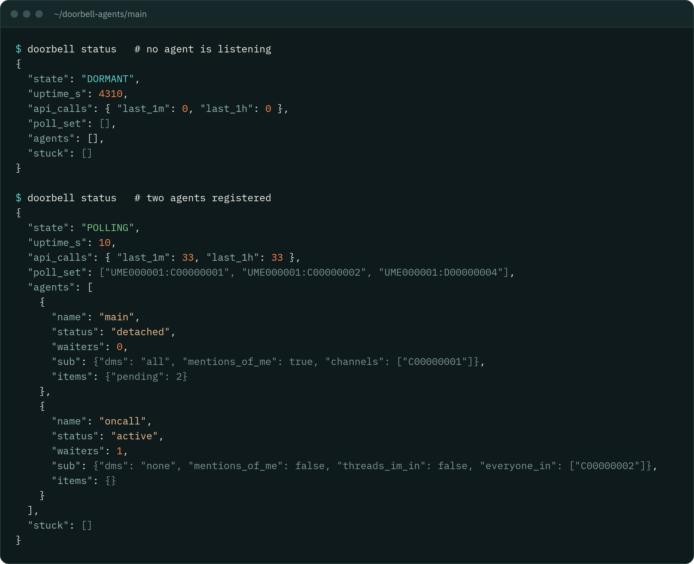

Unofficial, local, MIT, v0.2.0
Let your AI agents sleep.
Agent Doorbell watches Slack with a tiny local daemon and wakes your agent only when someone needs it. No LLM and no tokens while it is quiet.
pipx install agent-doorbellLinux, macOS and Windows (Linux is the tested platform). Works with Claude Code, Codex, Gemini CLI or any agent that can run a command.

Why it exists
An agent that "watches Slack" usually does it by checking: every few minutes it spends a model turn to find out that nothing happened. Doorbell moves the watching out of the model.
-
No token waste
The agent runs only when a message needs it. With no agents registered, the daemon makes no Slack calls at all (state DORMANT).
-
Your agent, your context
Replies come from your own agent, with your repos, tools and instructions, not from a generic bot.
-
Nothing is lost
Queued items are leased and redelivered if the agent dies. A laptop that was asleep catches up from where it stopped.
-
No server
No webhook, no public URL. It runs on your laptop or dev box, on Slack's free plan.
How it works

- Watch.
doorbelldpolls Slack with a read-only user token. Each agent'ssub.yamlsays whose messages count; the daemon polls the union of what live agents want. - Queue. Matching messages go to a per-agent queue.
inbox --claimleases items for 15 minutes; an expired lease redelivers the item, and after 3 attempts it becomes stuck and you get a notification. - Wake. Agents run headless through
doorbell dispatch, which starts a short run per batch, or live throughdoorbell wait, which blocks at no cost until there is work. - Resolve. The agent acks each item (replied, drafted, reacted, ignored or escalated). Hooks and observed replies ack for it, and unfinished items come back.

doorbell status output from the daemon running against a mock Slack. Some fields are trimmed, and the DORMANT run shows a settled daemon.5-minute setup
The short version. The full guide has a check after every step and is written so an AI agent can follow it for you. You need Python 3.10 or newer and a Slack workspace where you may create an app.
-
Install
pipx install agent-doorbell # or: uv tool install agent-doorbell -
Create your own read-only Slack app and save its token
At api.slack.com/apps choose Create New App, From a manifest, and paste
slack-app-manifest.yaml. Install it and copy thexoxp-token. Save it to a file only you can read (Linux and macOS; the guide has the Windows lines):mkdir -p ~/.config/doorbell ( umask 077; read -rsp 'Slack user token: ' t; echo; printf '%s\n' "$t" > ~/.config/doorbell/slack-token ) -
Start the watcher and add the token
doorbell service install doorbell identity add --token-file ~/.config/doorbell/slack-tokenCheck:
doorbell statusshows"state": "DORMANT". Dormant means no agents yet, so zero Slack API calls. -
Create an agent folder
doorbell init-agent ~/doorbell-agents/main --owner "Your Name"It writes
AGENTS.md(instructions and the queue commands),sub.yaml(who to listen to) and.doorbell-agent, plus a one-lineCLAUDE.mdthat points Claude Code at the same instructions. Edit the first two, then pick a permission level below. -
Run the agent
Headless, one short run per batch, with a draft-only Claude Code agent as the example:
doorbell service install --dispatch main --dir ~/doorbell-agents/main -- \ claude -p "/agent-doorbell:handle" --model sonnet --allowedTools "Bash(doorbell *)" \ "mcp__plugin_slack_slack__slack_send_message_draft" \ --disallowedTools "mcp__plugin_slack_slack__slack_send_message" "mcp__plugin_slack_slack__slack_schedule_message"Or a live session:
cd ~/doorbell-agents/main && claude "/agent-doorbell:listen". Thendoorbell statusshows your agent asactiveand the state asPOLLING.
Claude Code plugin
Install it once per machine, then let Claude Code walk you through the setup.
/plugin marketplace add mraj602/agent-doorbell
/plugin install agent-doorbell@agent-doorbell
/agent-doorbell:setup| Part | What it does |
|---|---|
/agent-doorbell:setup | The setup guide as a skill, with a check after each step. |
/agent-doorbell:handle | Claim the queue once, handle every item, stop. For headless runs. |
/agent-doorbell:listen | Live mode: wait in the background, handle messages as they arrive. |
/agent-doorbell:status | A plain-language status. |
| Hooks | Ack an item when the agent replies, drafts or reacts in Slack, and stop a turn from ending with claimed items unresolved. Active only in agent folders (with .doorbell-agent). |
The plugin grants no permissions and never changes your Claude Code settings.

Other agents
Doorbell is harness-neutral. An agent needs a non-interactive mode and three commands: wait, inbox --claim and ack. AGENTS.md already teaches it the protocol.
doorbell service install --dispatch main --dir ~/doorbell-agents/main -- \
codex exec "Follow AGENTS.md: handle the doorbell queue once, then stop."Gemini CLI (gemini -p) or your own script work the same way. One daemon serves any number of agents: each has its own folder, sub.yaml, queue, permission level and runner, and each conversation is polled once however many agents want it. Outside Claude Code you get the lease and redelivery, the stuck notification and the agent's own explicit acks; the auto-ack hooks are part of the Claude Code plugin.
What the agent may do
Three levels, set by your agent's own harness permissions, not by Doorbell. For Claude Code headless runs the --allowedTools and --disallowedTools flags are the limit; Codex and Gemini CLI have their own controls. Start with triage or draft.
| Level | The agent can | Worst case if it is fooled |
|---|---|---|
| Triage | Run doorbell commands only. It sorts items into escalated (with a summary) or ignored. | A wrong summary or a wrongly ignored item. |
| Draft | Also write Slack drafts in the right DM or thread. You review and send. | A bad draft that you do not send. |
| Reply | Also post and react as you. | A harmful post as you, within what the agent can read. |
Or let Doorbell hold the send policy
New in 0.2.0, optional. Give the agent nothing but doorbell commands. It writes drafts that you approve in your terminal, and sends directly only after you grant it with your password. The same on every harness.
# once, in your own terminal: a second Slack app (slack-app-manifest-sender.yaml)
doorbell sender add --token-file ~/.config/doorbell/sender-token # sets your sending password
# the agent
doorbell draft 12 --text "Staging picked up PR 214; build is green."
# you
doorbell review # approve, edit or reject each draft (password once)
doorbell grant main # optional: let agent "main" send directly
doorbell unlock # after a reboot- Separate, sealed token. Sending uses its own
chat:writetoken, encrypted with your password (scrypt, AES-256-GCM) and decrypted only into the daemon's memory. After a restart Doorbell is locked until you rundoorbell unlock. - Bounded. A granted agent can only answer in the conversation of one of its own open items, within an hourly limit, and can't
@channel. A grant covers the agent's subscription as it was when you granted it. - Password, not prompts. Approving, granting, unlocking and changing the token need the password, which agents never get. Revoking, rejecting and locking don't.
An agent that may run any command as you is not contained by this; keep it to doorbell commands. Sending setup
Security and privacy
- Read-only watching. The daemon never calls an LLM, and watches with a Slack app that has read scopes only;
identity addrejects tokens missing scopes and warns about extra ones. Optional sending uses a second token, sealed with your password. - Local only. The daemon listens on 127.0.0.1 and every request carries a random access key from a mode-600 file, so other users on the machine cannot use it. There is no cloud service and no public URL.
- The token stays in a file only you can read.
identity addrefuses group- or world-readable files on Linux and macOS. The setup skill never asks for it in chat. - It never writes your harness settings. Doorbell does not touch your agent's permission rules. Slack write access through Doorbell exists only if you set up sending and approve or grant with your password.
- Short memory. Messages are kept for 7 days, then deleted. Subscription changes an agent makes are audited and pop a notification, and an agent can only claim and ack its own items.
- Prompt injection is the main risk. The instructions tell the agent to treat message text as data and to escalate anything that commits you. That helps but is not a guarantee, which is why the hard limit is the agent's tool permissions.
FAQ
Does it cost tokens when nothing is happening?
No. The watcher is a plain Python daemon with no LLM. With no agents listening it makes no Slack API calls at all. A live doorbell wait session blocks on a background command, and headless dispatch has no agent process until there is work.
Why polling and not Slack events or webhooks?
Polling needs no public URL or always-on socket, and it can catch up after downtime, which events cannot. The cost is latency: replies arrive within about 30 seconds, not instantly. The architecture doc has the full comparison.
Does it need a paid Slack plan or admin rights?
Free plans work. Some workspaces require an admin to approve new apps; if yours does, the install step asks for approval.
Can it send messages for me?
Two ways. Your agent can reply with its own Slack tool, within the permissions you gave it. Or, since 0.2.0, through Doorbell: the agent writes drafts you approve with doorbell review, and agents you grant with your password can send directly into the conversations that reached them.
Live session or headless dispatch?
Headless is recommended for anything that runs for days: each batch starts a fresh, small context. A live session is good for watching the agent work, but its cost per batch grows with the session's age. See RUNNING.md.
How many people can share one daemon?
One person per daemon, with their own Slack app and token. Several agents can share it.
What are the known limits?
Linux is the tested platform; macOS and Windows should work but are not covered by CI yet. Only messages are watched, not search, files or canvases. See Limits and known gaps.